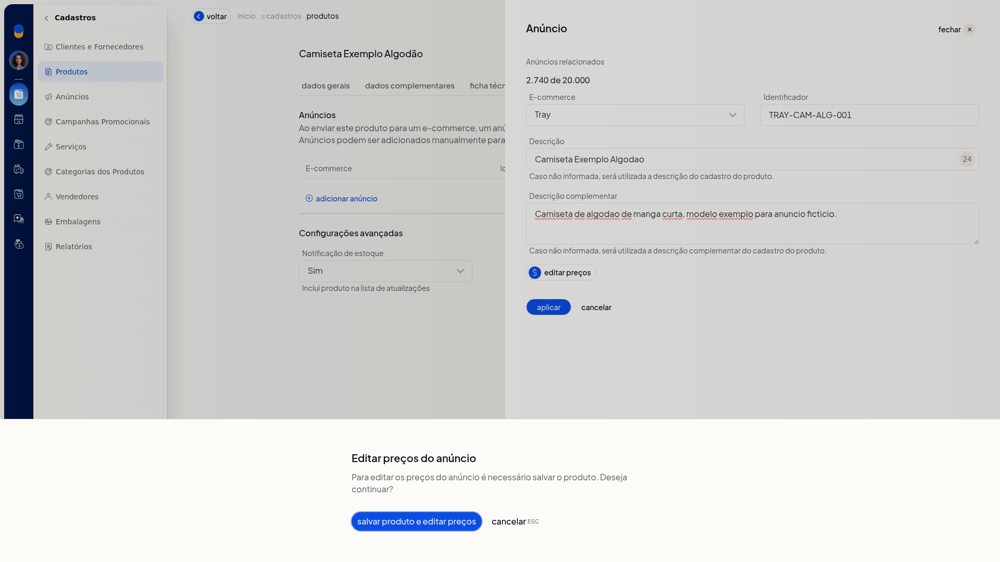

Cadastrar um produto simples
No ERP da Olist, o cadastro de produto simples reúne numa única ficha os dados para identificar o item, emitir nota fiscal, anunciar, precificar e controlar estoque.
Você inclui um produto do tipo Simples e preenche as abas Dados Gerais, Dados Complementares, Ficha técnica, Anúncios, Preços, Custos e Outros. O mesmo cadastro também pode começar por planilha ou pela recepção de anúncios de um ecommerce já conectado.
Importante
- Para usar o produto em nota fiscal, preencha Nome do produto, Origem do produto conforme ICMS, Unidade de medida e NCM - Nomenclatura comum do Mercosul. Na tela, esses campos exibem o texto Necessário para emissão de Nota Fiscal.
- Código (SKU) é opcional.
- Para lançar preço na aba Preços, a conta precisa ter ao menos uma lista de preço.
- Para vincular anúncio ou receber produtos do ecommerce, a conta precisa ter uma integração conectada.
- Com o produto ainda não salvo, editar os preços do anúncio não abre a edição. A tela pede para salvar o produto antes.
- Na importação, use planilha.xls,.xlsx ou.csv, de até 2 Mb e até 500 registros.
Instruções
Pela tela
- Acesse Cadastros > Produtos.
- Clique em Incluir produto.
- Em Dados Gerais, selecione Simples em Tipo do Produto.
- Preencha Nome do produto.
- Para nota fiscal, preencha Origem do produto conforme ICMS (códigos 0 a 8), Unidade de medida e NCM - Nomenclatura comum do Mercosul. O NCM segue o formato 1001.10.10. Para pedir uma sugestão de NCM à Lis da Olist, use o aviso da ficha ou clique em Sugerir.
- Preencha, se quiser, os demais campos de Dados Gerais:
-
Código de barras (GTIN)
-
Código (SKU)
-
Código CEST, no formato 01.003.00
-
Preço de venda e Preço promocional, em R$
-
Peso Líquido e Peso da embalagem, em kg
-
Tipo da embalagem: Envelope, Pacote / Caixa ou Rolo / Cilindro
-
Embalagem: embalagem customizada ou uma embalagem já cadastrada
-
Largura, Altura e Comprimento, em cm
-
Controlar estoque: Sim ou Não
-
Estoque inicial (E-commerce), Estoque mínimo e Estoque máximo
-
Sob encomenda: Sim ou Não
-
Controlar lotes: Sim ou Não
-
Localização
-
Dias para preparação: dias corridos para disponibilizar o produto

- Abra Dados Complementares.
- Atribua a Categoria no seletor. O caminho fica em níveis. Para retirar a categoria, clique em Remover.
- Informe, se quiser, Marca, Tabela de medidas, Descrição complementar, Link do vídeo, Slug, Palavras-chave, Título para SEO e Descrição para SEO.
- Inclua imagens, se quiser. Para as tags, clique em Editar tags.
- Abra Ficha técnica.
- Informe Atributo e Valor. Use sugerir atributos ou adicionar atributo e clique em Salvar na linha.
- Abra Anúncios.
- Clique em Adicionar anúncio.

- Selecione o E-commerce já conectado e preencha Identificador, Descrição e Descrição complementar. Se a descrição complementar do anúncio ficar em branco, o ERP usa a descrição complementar do cadastro do produto.

- Em Notificação de estoque, selecione Sim ou Não. Sim inclui o produto na lista de atualizações.
- Clique em Aplicar. Se clicar em editar preços antes de salvar o produto, a tela exibe o aviso Para editar os preços do anúncio é necessário salvar o produto. Use salvar produto e editar preços ou cancelar.

- Abra Preços.
- Escolha a Lista de preço já cadastrada e informe o preço e o preço promocional. Para lançar outro valor, use informar novo preço e clique em Salvar na linha.

- Abra Custos.
- Informe A partir de no formato DD/MM/AAAA, Saldo atual, Saldo anterior, Impostos recuperáveis, Preço custo, Custo médio e o preço de venda. Para lançar outro custo, use informar novo preço de custo e clique em Salvar na linha.
- Abra Outros e preencha, se quiser:
- Unidade por caixa, Linha de produto, Garantia e Markup
- Permitir inclusão nas vendas: Sim ou Não
- GTIN/EAN tributável, Unidade tributável e Fator de conversão
- Código de Enquadramento IPI e Valor do IPI fixo
- Código do produto na ANP e EX TIPI
- Alíq. específica de Imposto Seletivo, Qtd. tributada na monofasia e Qtd. tributada sujeita à retenção na monofasia
- Nome do fornecedor já cadastrado e Código no Fornecedor. Para incluir outro, clique em adicionar fornecedor
- Observações gerais sobre o produto, de uso interno. Esse texto não é exibido para o cliente
- Clique em Salvar.
Por planilha
- Acesse Cadastros > Produtos.
- Abra Mais ações e clique em Importar produtos de uma planilha.
- Baixe a planilha modelo. Se a planilha tiver outro layout, associe as colunas aos campos do ERP.
- Preencha a planilha sem alterar os cabeçalhos e deixe em branco as células não usadas.
- Preencha os campos obrigatórios Descrição, Situação (Ativo ou Inativo) e Sob Encomenda (Sim ou Não). Para nota fiscal, preencha Unidade, NCM com 8 dígitos e Origem de 0 a 8.
- Use os termos padronizados, como Sim/Não e os códigos de origem. Em categorias, siga Nível 1 > Nível 2 > Nível 3. Em imagens, informe até 10 URLs diretas.jpg,.png,.webp ou.jpeg. As colunas 1 a 6 são armazenadas e as colunas 7 a 10 ficam externas.
- Deixe o ID em branco para criar um produto novo. O cruzamento posterior é por SKU ou ID.
- Envie a planilha em.xls,.xlsx ou.csv, com até 2 Mb e até 500 registros. Em seguida, valide o arquivo e confira a prévia Todos, Novos, Atualizados e Com erros. Itens com erro impedem a importação. Só um arquivo 100% correto é processado.
Receber do e-commerce
- Acesse Cadastros > Produtos.
- Clique em Receber do e-commerce. O mesmo início também aparece em Mais ações, em Receber produtos do e-commerce.
- Confira o consumo de anúncios da conta (quantidade usada, limite e restante) e selecione uma integração já conectada.
- Clique em Avançar para seguir para a tela de novos anúncios.
Resultado
Antes de salvar, os valores digitados permanecem ao trocar entre as sete abas. A categoria atribuída permanece no caminho escolhido, com Remover.
Informações adicionais
Cancelar o painel de anúncio fecha o painel sem incluir a linha na tabela de anúncios.